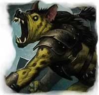
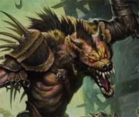

PSICOLOGIA DEGLI GNOLL
L'istinto primario pervade la mente degli Gnoll più di quanto faccia in ogni
altra razza umanoide. Gli Gnoll sono predatori naturale e notturni che provano
un brivido di piacere nell'attaccare ed uccidere le loro prede od i loro nemici.
Questo aspetto bestiale spinge gli Gnoll a vivere in zone selvagge dove
avventurarsi in branco per cacciare e per razziare. La vita civilizzata ed
organizzata non rappresenta per uno Gnoll una piacevole alternativa. Gli Gnoll
sono tutti ugualmente feroci ed aggressivi, senza distinzione di sesso. Le
femmine di Gnoll, infatti, sono solite cacciare e combattere fianco a fianco ai
loro maschi assumendo, a volte, anche un ruolo di comando.
Gli Gnoll hanno generalmente un temperamento aggressivo, simile a colui che è
abituato a fare domande più che dare risposte.
Nonostante gli Gnoll non siano necessariamente di indole malvagia (evil)
l'istinto da predatore e la sete di sangue pervade costantemente la loro mente
provocando, in molti casi, reazioni animalesche e violente nei confronti dei
membri delle altre razze.
Per motivi legati alla loro organizzazione sociale (vedi sotto) gli Gnoll hanno
l'abitudine di cercare e depredare luoghi e cadaveri. Questa tendenza alla
ricerca spasmodica di trofei ed ammennicoli caratterizza gli Gnoll che amano
collezionare oggetti, trasportandoli ed indossandoli, che possano ricordare le
proprie imprese e avventure passate. Per lo stesso motivo risulta assai
difficile convincere uno Gnoll ad abbandonare un luogo od un cadavere senza
prima aver ricercato tesori od oggetti collezionabili anche quando l'attesa
potrebbe risultare pericolosa.
Quando questa abitudine è combinata con la fame atavica di queste creature ed il
loro istinto predatorio è facile comprendere come costoro non si limitino a
trasportare gli oggetti ritrovati ma, se possibile, gli stessi cadaveri che
saranno sbranati o divorati successivamente. Non a caso, in alcune occasioni,
interi villaggi assaliti dagli Gnoll sono stati ritrovati non solo saccheggiati
ma anche privi dei cadaveri dei loro abitanti!
LA CULTURA GNOLL
Contrariamente alla natura selvaggia e
bestiale della loro razza, però, esistono aspetti della cultura degli Gnoll che
non possono definirsi del tutto primitivi. Gli Gnoll, ad esempio, conferiscono
grande valore ai legami familiari, in special modo a quelli basati sulla
discendenza di sangue (calcolata secondo la linea di discendenza da una femmina
comune). Questi legami di tipo familiari sono apprezzabili nelle battaglie che
gli Gnoll combattono in branco contro le altre razze e contro gruppi di Gnoll
rivali. Quando combattono in branco gli Gnoll non ricercano gloria personale per
aiutare i propri compagni. Quando uno Gnoll si allontana dal proprio nucleo
familiare o viene sradicato dallo stesso, per l'istintiva necessità di trovare
un "branco" surrogato, sviluppa il medesimo senso di lealtà familiare nei
confronti dei compagni e degli amici più stretti, anche se di razza diversa.
Essere considerato membro del "branco" da parte di uno Gnoll rappresenta del
resto l'unico vero modo di ricevere da costui lealtà ed amicizia. L'altro lato
della medaglia, invece, è rappresentato dalla costante diffidenza, se non
ostilità, che gli Gnoll avvertono nei confronti di tutti coloro non sono
considerati parte del "branco". Tale atteggiamento rende particolarmente
pericoloso accompagnarsi con uno Gnoll, specie quando si tratta di un esemplare
dominante. Questo comportamento, inoltre, impedisce di fatto (fortunatamente per
le altre razze) aggregazioni particolarmente numerose di Gnoll e scatena spesso
guerre territoriali tra tribù o branchi diversi di Gnoll considerati come
pericolosi concorrenti da eliminare.
LA SOCIETA' GNOLL
La società degli Gnoll si basa sul comando
del più forte di loro che impartisce la disciplina attraverso l'uso della forza
bruta, della violenza e dell'intimidazione.
Gli Gnoll vivono comunemente in tribù disorganizzate e spesso nomadi.
Quest'organizzazione sociale primitiva impedisce spesso alle comunità di Gnoll
di prosperare e di sviluppare tecnologie che richiedono una base fissa di
operazione (si pensi alle fucine ed ai laboratori). L'economia delle comunità
Gnoll, infatti, si basa principalmente sulla caccia e sulle produzioni ad essa
relative (carni, pelli, cuoio e pellicce). Gli Gnoll, quindi, si procurano i
necessari prodotti di manifattura più complessa (armi di acciaio, gioielli,
ecc...) dalle altre civiltà. Questa dipendenza spesso non viene soddisfatta
commerciando ma attraverso l'utilizzo della forza e della razzia. Per il
medesimo motivo gli Gnoll hanno l'abitudine, quasi istintiva, di spogliare i
cadaveri dei nemici abbattuti portando con se ogni oggetto ritrovato anche se
apparentemente inutile. Sempre la natura nomade e tribale, impedisce spesso agli
Gnoll di intraprendere la carriera di una classe di personaggio o comunque
mantiene costoro a bassi livelli di esperienza. Non è un caso, infatti, che i
più forti ed esperi Gnoll sono quelli che, per le forze del destino, hanno
vissuto lontano dalla loro tribù d'origine.
La naturale diffidenza ed ostilità per tutti coloro non sono ritenuti membri del
"branco" congiuntamente alla necessità di procurarsi costantemente produzioni di
altre civiltà e di soddisfare un costante appetito famelico di carne trasforma
molte comunità Gnoll in veri e propri pericolosi "branchi" di razziatori e
predoni. Quando un "branco" di Gnoll attacca una qualsiasi comunità (anche di
altri Gnoll) non mostra alcuna pietà per le vittime. I sopravvissuti sono
catturati come schiavi e trattati brutalmente sia mentalmente che fisicamente.
Gli Gnoll detestano il lavoro fisico (fatta eccezione per l'attività venatoria e
la lotta che li attrae istintivamente). Per tale motivo preferiscono
appropriarsi, con la forza od il furto, del frutto del lavoro altrui (specie del
lavoro agricolo). Quando abbastanza potenti ed organizzati utilizzano, invece,
gli schiavi perché lavorino al posto loro fornendo la comunità di quello che
necessita. Alcuni Gnoll ed alcuni branchi hanno fatto della soggiogazione una
loro caratteristica peculiare divenendo esperti schiavisti. La brutalità del
comportamento di alcuni di questi schiavisti è conosciuta nel mondo di Arelia.
Gli schiavi che si ribellano o che non sono in grado di lavorare sono spesso
divorati (spesso vivi ed alla vista degli altri schiavi per fornire esempio). I
pochi fortunati liberati o fuggiti dalla segregazione sono soliti raccontare
particolari truculenti e brutali sui trattamenti ricevuti. Fortunatamente solo
gli Gnoll di indole più malvagia e quelli appartenenti a branchi più selvaggi
sono soliti operare in questo modo. Spesso, su tale scelta, influisce la
religione seguita dai membri del branco. Gli Gnoll fedeli di Azatar, infatti,
sono soliti operare in modo violento, irrazionale e brutale; laddove quelli
fedeli alle Forze della Natura sono soliti comportarsi in modo meno brutale e
sanguinario. Maggiore è l'integrazione del branco (o del singolo Gnoll) con le
altre razze, inoltre, minore sono le possibilità che i suoi i membri pongano in
essere comportamenti efferati e truculenti. ciò sempre che il loro appetito sia
costantemente saziato!

|
Gli Gnoll sono degli umanoidi malvagi che possiedono
una testa da iena. L'altezza media per uno Gnoll è di 2,25 metri, possiedono una
pelle grigio-rossastra, la pelliccia ricopre il loro corpo, la testa da iena è
ricoperta da una folta criniera grigio-giallastra. Uno Gnoll adulto pesa circa
150 kg.
Si noti che i colori più rari, ossia il Grigio Cenere ed il Grigio Ardesia (Carminio per gli occhi) sono ritenuti simbolo di purezza della razza. Per tale motivo un personaggio della razza Gnoll otterrà un bonus +1 a tutte le prove di appearance effettuate nei confronti di un altro membro della medesima razza per ogni tratto somatico raro posseduto, inoltre se possiede tutti i tratti somatici rari costui riceverà anche un bonus di +1 a tutte le prove di carisma effettuate nei confronti di un altro membro della medesima razza.
|
 |

|
MODIFICATORE RAZZIALE ALLE ABILITÀ |
| Bonus di +1 alla Forza |
| Penalità di -1 all'Intelligenza |
| MODIFICATORE BASE AI PUNTI ESPERIENZA | 10% malus + costo iniziale di 3500 punti esperienza |
|
PUNTEGGI MINIMI E MASSIMI RAZZIALI PER LE ABILITÀ |
||
| ABILITÀ | MINIMO | MASSIMO |
| Forza | 12 | 18 |
| Intelligenza | 3 | 16 |
| Saggezza | 3 | 17 |
| Costituzione | 12 | 18 |
| Carisma | 3 | 17 |
| Destrezza | 6 | 18 |
|
ACCESSO ALLE VARIE CLASSI |
|
| CLASSE | LIVELLO MASSIMO |
| COMBATTENTE - Fighter | 14° livello |
| COMBATTENTE - Berserker | 13° livello |
| COMBATTENTE - Enrager | 12° livello |
| COMBATTENTE - Adoratore del Sangue | 12° livello |
| SACERDOTE - Cleric | 13° livello |
| SACERDOTE - Blood Priest | 12° livello |
| SACERDOTE - Negative Master | 10° livello |
| SACERDOTE - Shaman | 9° livello |
| VAGABONDO - Thief | 12° livello |
| VAGABONDO - Brigand | 12° livello |
| VAGABONDO - The Hunter | 11° livello |
|
ACCESSO ALLE CLASSI MULTIPLE |
| COMBATTENTE/SACERDOTE |
|
ACCESSO ALLE DIVINITA' |
| Azatar, Karan, Kiun, Forze della Natura |
|
ABILITÀ DEI LADRI |
PUNTEGGIO INIZIALE |
| Pick Pocket | 10 % |
| Open Lock | 5 % |
| Find/Rem. Trap | 0 % |
| Move Silently | 20 % |
| Hide in Shadows | 5 % |
| Detect Noise | 25 % |
| Climb Wall | 55 % |
| Read Languages | - 10 % |
| FATTORE MOVIMENTO BASE | 6 esagoni |
| SENTIRE RUMORI | 25 % |
|
DIMENSIONI E PESO |
SISTEMA DI CALCOLO DELL'ALTEZZA E DEL PESO |
| Altezza del maschio | 161 cm. + 3 cm. per punto di costituzione + 2d10 cm. |
| Altezza della femmina | 156 cm. + 3 cm. per punto di costituzione + 2d8 cm. |
| Peso del maschio | 81 kg. + 3 kg. per punto di costituzione + 3d10 kg. |
| Peso della femmina | 76 kg. + 3 kg. per punto di costituzione + 3d8 kg. |
|
CATEGORIA DI ETÀ |
ANNI |
| Starting Age | 9 + 1d3 |
| Childhood | 0 - 9 |
| Adolescence | 10 - 14 |
| Adulthood | 15 - 39 |
| Middle Age* | 40 - 55 |
| Old Age** | 56 - 75 |
| Venerable Age*** | 76 + |
| Maximum Age | 76 +1d10 + 1d4 |
* Middle Age: I
personaggi di questa categoria di età perdono 1 punto di forza ed 1 punto di
costituzione, acquisiscono però 1 punto di intelligenza ed 1 punto di saggezza
(non potendo, in ogni caso, superare i massimi razziali).
** Old Age: I personaggi di questa categoria di età perdono 2 punti di
destrezza, 2 ulteriori punti di forza ed 1 ulteriore punto di costituzione,
acquisiscono però 1 ulteriore punto di saggezza (non potendo, in ogni caso,
superare i massimi razziali).
*** Venerable Age: I personaggi di questa categoria di età perdono 1
ulteriore punto di destrezza, di forza e di costituzione, acquisiscono però 1
ulteriore punto di intelligenza e di saggezza (non potendo, in ogni caso,
superare i massimi razziali).


| NOME | Creatura Mostruosa |
| COSTO IN PUNTI CREAZIONE | NESSUNO - ACQUISIZIONE AUTOMATICA |
| REQUISITO PARTICOLARE | NESSUNO |
| DESCRIZIONE |
Indipendentemente
dal livello raggiunto i personaggi Gnoll ottengono una serie di
caratteristiche
proprie della loro natura mostruosa. Per tale motivo
tutti i personaggi Gnoll saranno tenuti all'applicazione delle seguenti
regole: |
| NOME | Creatura di Taglia Grande |
| COSTO IN PUNTI CREAZIONE | NESSUNO - ACQUISIZIONE AUTOMATICA |
| REQUISITO PARTICOLARE | NESSUNO |
| DESCRIZIONE |
Gli Gnoll sono
creature di dimensioni Large. Per
tale motivo, tutti i personaggi Gnoll saranno tenuti all'applicazione
delle seguenti regole: |
| NOME | Oscurovisione |
| COSTO IN PUNTI CREAZIONE | NESSUNO - ACQUISIZIONE AUTOMATICA |
| REQUISITO PARTICOLARE | NESSUNO |
| DESCRIZIONE |
Gli Gnoll sono
creature dotate di oscurovisione per tale motivo costoro ottengono i
seguenti benefici: |
| NOME | Sensi Superiori |
| COSTO IN PUNTI CREAZIONE | NESSUNO - ACQUISIZIONE AUTOMATICA |
| REQUISITO PARTICOLARE | NESSUNO |
| DESCRIZIONE |
Gli Gnoll sono
creature dotate di sensi superiori per tale motivo costoro ottengono i
seguenti benefici: |
| NOME | Tratti Bestiali |
| COSTO IN PUNTI CREAZIONE | NESSUNO - ACQUISIZIONE AUTOMATICA |
| REQUISITO PARTICOLARE | NESSUNO |
| DESCRIZIONE |
Gli Gnoll
sono creature
bestiali. Per tale motivo, nonostante il loro addestramento, i personaggi
Gnoll
mantengono alcuni tratti bestiali. In particolare: |
| NOME | Abitudini Bestiali |
| COSTO IN PUNTI CREAZIONE | NESSUNO - ACQUISIZIONE AUTOMATICA |
| REQUISITO PARTICOLARE | NESSUNO |
| DESCRIZIONE |
Gli Gnoll
sono creature
bestiali avverse alle sofisticazioni tecnologiche e sociali proprie delle società ad alto
livello di civilizzazione. Per tale motivo i personaggi Gnoll ottengono
uno svantaggio nell'acquisizione di alcuni tipi di competenze. In particolare: |
| NOME | Avversione alla Civiltà |
| COSTO IN PUNTI CREAZIONE | NESSUNO - ACQUISIZIONE AUTOMATICA |
| REQUISITO PARTICOLARE | NESSUNO |
| DESCRIZIONE |
Gli Gnoll
sono creature
bestiali avverse alle sofisticazioni tecnologiche e sociali proprie delle società ad alto
livello di civilizzazione. Per tale motivo i personaggi Gnoll ottengono
uno svantaggio nell'acquisizione di alcuni tipi di competenze. In particolare: |
| NOME | Istinto da Predatore |
| COSTO IN PUNTI CREAZIONE | 1 |
| REQUISITO PARTICOLARE | NESSUNO |
| DESCRIZIONE |
Essendo parzialmente
creature bestiali alcuni Gnoll hanno imparato ad utilizzare i loro sensi
superiori nelle battute di caccia rappresentando i migliori cacciatori
della loro
razza.
Per tale motivo coloro
che possiedono questo talento razziale ottengono il seguente beneficio: |
| NOME | Attitudine a Sbranare |
| COSTO IN PUNTI CREAZIONE | 2 |
| REQUISITO PARTICOLARE | NESSUNO |
|
DESCRIZIONE  |
Alcuni
Gnoll
possono dimostrarsi particolarmente feroci quando combattono con il loro
attacco naturale costituito dal morso.
Per tale motivo coloro
che possiedono questo talento razziale ottengono il seguente beneficio: |
| NOME | Armi della Tradizione Gnoll |
| COSTO IN PUNTI CREAZIONE | 2 |
| REQUISITO PARTICOLARE | NESSUNO |
| DESCRIZIONE |
Gli Gnoll
hanno la propensione per l'utilizzo di alcune specifiche armi che da
secoli la loro razza utilizza in battaglia. In particolare, rientrano
nella tradizione degli Gnoll le seguenti armi:
Shoka,
Carrikal,
Mace,
Mace Axe,
Flange
Mace
e
Great Mace.
Per tale motivo coloro che
possiedono questo talento razziale ottengono i seguenti benefici: |
| NOME | Ferocia di Combattimento |
| COSTO IN PUNTI CREAZIONE | 2 |
| REQUISITO PARTICOLARE | NESSUNO |
|
DESCRIZIONE  |
Alcuni
Gnoll
possono dimostrarsi estremamente feroci in combattimento.
Per tale motivo coloro
che possiedono questo talento razziale ottengono il seguente beneficio: |
| Struttura Fisica Superiore | |
| COSTO IN PUNTI CREAZIONE | 3 |
| REQUISITO PARTICOLARE | PUNTEGGIO IN COSTITUZIONE ALMENO PARI A 14 |
| DESCRIZIONE |
Le
natura selvaggia e parzialmente animale degli Gnoll
permette ad alcuni di
loro di invigorire il fisico rendendolo possente e maggiormente robusto.
Per tale motivo coloro
che possiedono questo talento razziale ottengono il seguente beneficio:
|
| Richiamo del Branco | |
| COSTO IN PUNTI CREAZIONE | 3 + 5% malus punti esperienza |
| REQUISITO PARTICOLARE | NESSUNO |
| DESCRIZIONE |
Alcuni Gnoll sentono il richiamo del branco quando vanno a caccia e
combattono contro un nemico comune.
Per tale motivo coloro
che possiedono questo talento razziale ottengono il seguente beneficio:
|